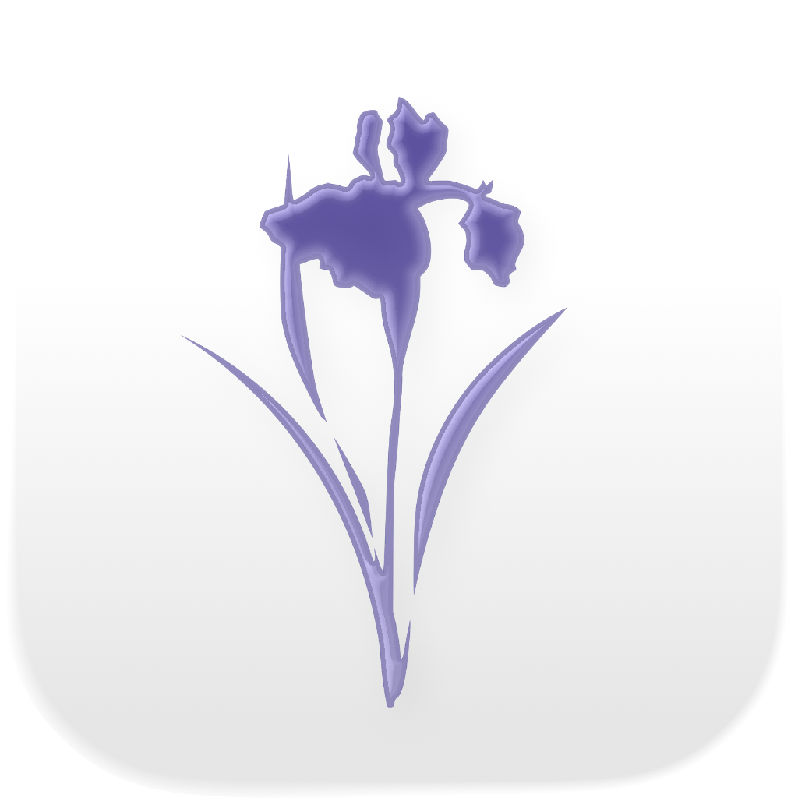

A new vision of the world, sharp and vibrant. Designed for those who see differently.
Available on App StoreHarness the power of your GPU to highlight colors that would otherwise be missed, with zero latency.
Dedicated support for Deuteranomaly, Protanomaly, and Tritanomaly with specific calibrations.
A clean, modern, and intuitive interface that puts the visual experience at the center.